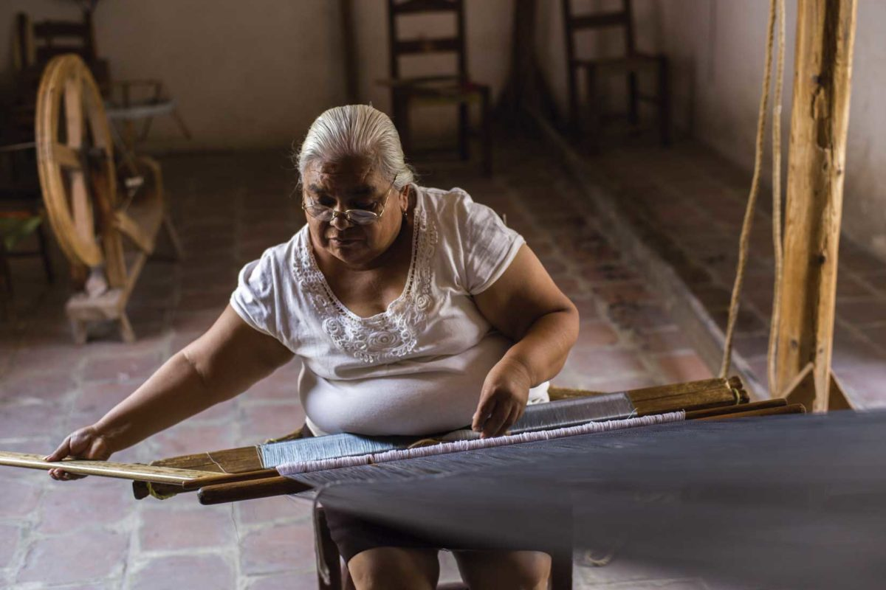

-
Devanado de hilo
Primero, si el hilo viene en madeja habrá que devanarlo, es decir, montarlo en carretes de forma manual o eléctricos, para poderlo pasar al cajón y empezar a urdirlo.
Urdido de tela
En este paso se determinará el ancho y largo de la prenda, Primero se efectúa el conteo de hilos para los rebozos que tienen dos o más colores. Después se colocan los carretes de hilo (llamados canutillos o canillas) en el cajón del urdidor e irlos pasando ardedor de un bastidor (el cual es el urdidor), después se hace girar manualmente mientras se cuentan las vueltas y se van marcando los cruces de los hilos. -
Pepenado
El pepenado consiste en repartir los hilos para formar los cordones. Para llevarlo a cabo se utilizan las manos o un madero con separaciones donde van pepenandose (es decir escogiéndose) los hilos en grupos de 20 o más, para formar los cordones donde se hará el diseño
Estos cordones ya secos se peinan con una herramienta llamada empalmador, después se procede a marcar un dibujo sobre ellos con tinta negra. Cuando se trata de rebozos “de autor” este dibujo se lleva a cabo a mano, cuando son de línea puede utilizarse un sello redondo o plano que agiliza el proceso. Se pueden dibujar líneas rectas, curvilíneas, puntos, cruces, entre otros, que se van repitiendo o alternándose según el deseo del artesano, igualmente estos dibujos tienen nombre y varían dependiendo del lugar.
Amarrado
El amarrado consiste en el procedimiento de cubrir los espacios en blanco dibujados con hilo, estas áreas se recubren con amarres que el artesano aprieta con varias vueltas de hilo, la función de estos amarres sobre el dibujo es impedir que el tinte penetre en los espacios.Remojado
Desmontando los cordones amarrados son sumergidos en agua y se golpean contra una piedra o superficie lisa y dura para retirar el atole y provocar que el hilo de los tramos entre amarres se separe para facilitar el siguiente paso.Teñido
Primero el colorante se vierte en agua, en ollas de barro o tinas metálicas, calentándose al fuego sin que alcance el hervor. Después sé sumergen varias veces los cordones en este tinte. Durante este proceso se determinará el jaspe, ya que el color no penetrara en las partes cubiertas por los amarres.Boleado y desatado
Se montan de nuevo estos cordones amarrados y teñidos en el marco de boleado. Cuando secan, el artesano procede a desatar loa amarres con una navaja o cuchillo filoso, con gran habilidad y precisión de no lastimar ni trozar los demás hilos. Estos cordones desatados estarán formados por secciones teñidas y sin teñir.Veteado y montaje del telar
Se trata de entreverar los dos juegos de urdimbres, este proceso varía del telar a utilizar, y se define el tamaño.Tejido
Después del montaje en el telar se procede a realizar el tejido, el cual varía de acuerdo al telar, la habilidad del artesano, mientras avanza el proceso, los hilos de la urdimbre destinados a la punta se dejan sin tejer.Teñido de las puntas
Una vez concluido el tejido del rebozo, se componen las puntas para teñirlas de color.Empuntado del rebozo
En este proceso se va anudando las puntas del rebozo, este proceso se realiza a mano con diferentes modelos según el artesano. -
Planchado
A base de rodillos de madera, que se encuentran a una determinada presión, el rebozo es insertado para plancharlo y darle el brillo.